| Symbol |
Description |
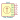
SW_Coded | Description: Rotary switch, 4-bit encoding
Keys: rotary hex |
SW_Coded_SH-7010 | Description: Rotary switch, 4-bit encoding, 10 positions, Real code
Keys: rotary bcd Real
Datasheet: https://www.nidec-copal-electronics.com/e/catalog/switch/sh-7000.pdf |
SW_Coded_SH-7030 | Description: Rotary switch, 4-bit encoding, 10 positions, Complementary code
Keys: rotary bcd Complementary
Datasheet: https://www.nidec-copal-electronics.com/e/catalog/switch/sh-7000.pdf |
SW_Coded_SH-7040 | Description: Rotary switch, 4-bit encoding, 10 positions, Gray code
Keys: rotary bcd Gray
Datasheet: https://www.nidec-copal-electronics.com/e/catalog/switch/sh-7000.pdf |
SW_Coded_SH-7050 | Description: Rotary switch, 4-bit encoding, 16 positions, Real code
Keys: rotary hex Real
Datasheet: https://www.nidec-copal-electronics.com/e/catalog/switch/sh-7000.pdf |
SW_Coded_SH-7070 | Description: Rotary switch, 4-bit encoding, 16 positions, Complementary code
Keys: rotary hex Complementary
Datasheet: https://www.nidec-copal-electronics.com/e/catalog/switch/sh-7000.pdf |
SW_Coded_SH-7080 | Description: Rotary switch, 4-bit encoding, 16 positions, Gray code
Keys: rotary hex Gray
Datasheet: https://www.nidec-copal-electronics.com/e/catalog/switch/sh-7000.pdf |
SW_DIP_x01 | Description: 1x DIP Switch, Single Pole Single Throw (SPST) switch, small symbol
Keys: dip switch |
SW_DIP_x02 | Description: 2x DIP Switch, Single Pole Single Throw (SPST) switch, small symbol
Keys: dip switch |
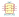
SW_DIP_x03 | Description: 3x DIP Switch, Single Pole Single Throw (SPST) switch, small symbol
Keys: dip switch |
SW_DIP_x04 | Description: 4x DIP Switch, Single Pole Single Throw (SPST) switch, small symbol
Keys: dip switch |
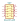
SW_DIP_x05 | Description: 5x DIP Switch, Single Pole Single Throw (SPST) switch, small symbol
Keys: dip switch |
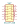
SW_DIP_x06 | Description: 6x DIP Switch, Single Pole Single Throw (SPST) switch, small symbol
Keys: dip switch |
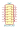
SW_DIP_x07 | Description: 7x DIP Switch, Single Pole Single Throw (SPST) switch, small symbol
Keys: dip switch |
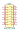
SW_DIP_x08 | Description: 8x DIP Switch, Single Pole Single Throw (SPST) switch, small symbol
Keys: dip switch |
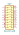
SW_DIP_x09 | Description: 9x DIP Switch, Single Pole Single Throw (SPST) switch, small symbol
Keys: dip switch |
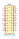
SW_DIP_x10 | Description: 10x DIP Switch, Single Pole Single Throw (SPST) switch, small symbol
Keys: dip switch |
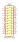
SW_DIP_x11 | Description: 11x DIP Switch, Single Pole Single Throw (SPST) switch, small symbol
Keys: dip switch |
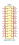
SW_DIP_x12 | Description: 12x DIP Switch, Single Pole Single Throw (SPST) switch, small symbol
Keys: dip switch |
SW_DP3T | Description: Switch, three position, dual pole triple throw, 3 position switch, SP3T
Keys: switch dp3t ON-ON-ON |
SW_DPDT_x2 | Description: Switch, dual pole double throw, separate symbols
Keys: switch dual-pole double-throw DPDT spdt ON-ON |
SW_DPST | Description: Double Pole Single Throw (DPST) Switch
Keys: switch dual double-pole single-throw OFF-ON |
SW_DPST_Temperature | Description: Double Pole Single Throw (DPST) Switch, temperature dependent
Keys: temerature switch dual double-pole single-throw OFF-ON |
SW_DPST_x2 | Description: Single Pole Single Throw (SPST) switch, separate symbol
Keys: switch lever |
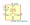
SW_E3_SA3216 | Description: Push button switch with LCD screen
Keys: switch normally-open pushbutton push-button LCD
Datasheet: http://www.e3-keys.com/files/SA%20Technical%20Datasheet%20v2.0.pdf |
SW_E3_SA3624 | Description: Push button switch with LCD screen
Keys: switch normally-open pushbutton push-button LCD
Datasheet: http://www.e3-keys.com/files/SA%20Technical%20Datasheet%20v2.0.pdf |
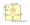
SW_E3_SA6432 | Description: Push button switch with LCD screen
Keys: switch normally-open pushbutton push-button LCD
Datasheet: http://www.e3-keys.com/files/SA%20Technical%20Datasheet%20v2.0.pdf |
SW_MEC_5E | Description: MEC 5E single pole normally-open tactile switch
Keys: switch normally-open pushbutton push-button
Datasheet: http://www.apem.com/int/index.php?controller=attachment&id_attachment=1371 |
SW_MEC_5G | Description: MEC 5G single pole normally-open tactile switch
Keys: switch normally-open pushbutton push-button
Datasheet: http://www.apem.com/int/index.php?controller=attachment&id_attachment=488 |
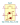
SW_MEC_5G_2LED | Description: MEC 5G single pole normally-open illuminated tactile switch with two LEDs
Keys: switch normally-open pushbutton push-button LED
Datasheet: http://www.apem.com/int/index.php?controller=attachment&id_attachment=488 |
SW_MEC_5G_LED | Description: MEC 5G single pole normally-open illuminated tactile switch
Keys: switch normally-open pushbutton push-button LED
Datasheet: http://www.apem.com/int/index.php?controller=attachment&id_attachment=488 |
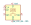
SW_MMI_Q5-100 | Description: Push button switch with LCD screen
Keys: switch normally-open pushbutton push-button LCD
Datasheet: http://latest.ledswitches.co.uk/media/pdf/Q5-PCB-V1-withQ5data.pdf |
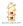
SW_NKK_GW12LJPCF | Description: Switch, single pole double throw, illuminated paddle, red and green LEDs
Keys: switch single-pole double-throw spdt ON-ON illuminated red green
Datasheet: http://www.nkkswitches.com/pdf/gwillum.pdf |
SW_Push | Description: Push button switch, generic, two pins
Keys: switch normally-open pushbutton push-button |
SW_Push_45deg | Description: Push button switch, normally open, two pins, 45 tilted
Keys: switch normally-open pushbutton push-button |
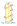
SW_Push_DPDT | Description: Momentary Switch, dual pole double throw
Keys: switch dual-pole double-throw spdt ON-ON |
SW_Push_Dual | Description: Push button switch, generic, symbol, four pins
Keys: switch normally-open pushbutton push-button |
SW_Push_Dual_x2 | Description: Push button switch, generic, separate symbols, four pins
Keys: switch normally-open pushbutton push-button |
SW_Push_Lamp | Description: Push button switch with Signal Lamp, generic
Keys: switch normally-open pushbutton push-button Lamp |
SW_Push_LED | Description: Push button switch with LED, generic
Keys: switch normally-open pushbutton push-button LED |
SW_Push_Open | Description: Push button switch, push-to-open, generic, two pins
Keys: switch normally-closed pushbutton push-button |
SW_Push_Open_Dual | Description: Push button switch, normally closed, generic, four pins
Keys: switch normally-closed pushbutton push-button |
SW_Push_Open_Dual_x2 | Description: Push button switch, push-to-open, generic, two pins
Keys: switch normally-closed pushbutton push-button |
SW_Push_SPDT | Description: Momentary Switch, single pole double throw
Keys: switch single-pole double-throw spdt ON-ON |
SW_Reed | Description: reed switch
Keys: reed magnetic switch |
SW_Reed_Opener | Description: reed switch, default-closed
Keys: reed magnetic switch |
SW_Reed_SPDT | Description: SPDT reed switch
Keys: reed magnetic switch SPDT |
| SW_Rotary12 | Description: rotary switch with 12 positions
Keys: rotary switch
Datasheet: http://cdn-reichelt.de/documents/datenblatt/C200/DS-Serie%23LOR.pdf |
| SW_Rotary2x6 | Description: 2 rotary switch with 6 positions
Keys: rotary switch
Datasheet: http://cdn-reichelt.de/documents/datenblatt/C200/DS-Serie%23LOR.pdf |
| SW_Rotary3x4 | Description: 3 rotary switches with 4 positions
Keys: rotary switch
Datasheet: http://cdn-reichelt.de/documents/datenblatt/C200/DS-Serie%23LOR.pdf |
| SW_Rotary4x3 | Description: 4 rotary switches with 3 positions
Keys: rotary switch
Datasheet: http://cdn-reichelt.de/documents/datenblatt/C200/DS-Serie%23LOR.pdf |
SW_SP3T | Description: Switch, three position, single pole triple throw, 3 position switch, SP3T
Keys: switch sp3t ON-ON-ON |
SW_SPDT | Description: Switch, single pole double throw
Keys: switch single-pole double-throw spdt ON-ON |
SW_SPDT_MSM | Description: Switch, single pole double throw, center OFF position
Keys: switch spdt single-pole double-throw ON-OFF-ON |
SW_SPST | Description: Single Pole Single Throw (SPST) switch
Keys: switch lever |
SW_SPST_Lamp | Description: Single Pole Single Throw (SPST) switch with signal lamp, generic
Keys: switch SPST LED OFF-ON lamp |
SW_SPST_LED | Description: Single Pole Single Throw (SPST) switch with LED, generic
Keys: switch SPST LED OFF-ON |
| SW_SPST_Temperature | Description: Single Pole Single Throw (SPST) switch, temperature dependent
Keys: temperature switch |